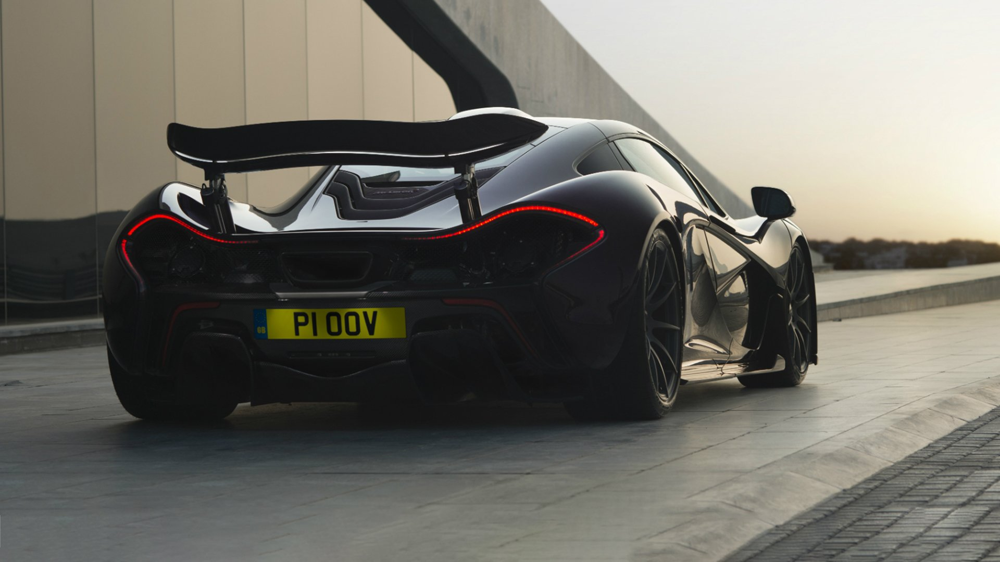
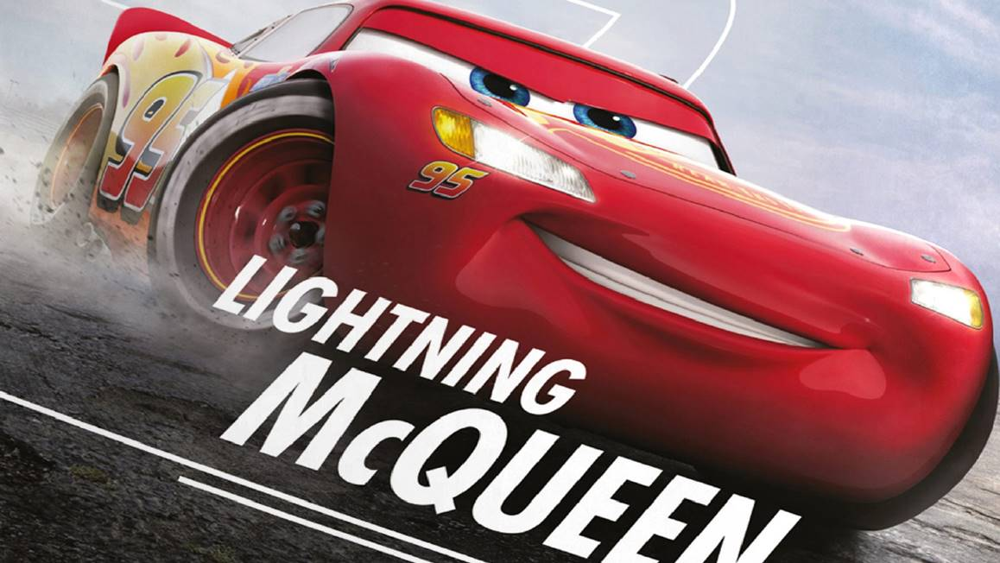

overal heb je een elite versie vandus ook bij auto's heb je elite auto's deze auto's noemen we dan ook Super cars. ze hebbenenorm veel HP hebben een ongelofelijke topsnelheid en zijn ook zeker niet goedkoop. hier link heb je een plaatje van een McLaren p1 kost bijvoorbeeld meer dan 1.1 miljoen! maar voor die prijs heb je ook zeker een race monster deze auto heeft meer dan 900 HP en een topspeed van 350KM/H en dat is ongelofelijk snel. maar de snelste productie auto op dit moment is e bugatti Chiron! het snelste dat een bugatti chiron heeft gereden was 490KM/H en de 1-100 is 2.4 seconde. dit is echt heel speciaal maar als je zo'n beest wil besturen moet je wel 3.5 miljoen betalen.

zulke auto's zijn natuurlijk echt een droom voor de meeste jongens en ook in de film wereld word dit opgemerkt en daarom zijn er dus ook films over deze mooie auto's. de bekendste is cars en hier heeft iedereen denk ik wel is van gehoort. het enige verschil tussen bv de mclaren p1 en lightning mcqueen (hoofdrol speler in car) is dat lightning mcqueen echt een track car is dat betekend dat hij echt voor het circuit is gebouwd. en dat is duidelijk te merken. maar dan wel met de amerikaanse manier. want de auto heeft eigelijk heel weinig downforce. downforce zorgt ervoor dat in de bochten de auto in de bochten de auto op de baan blijft en niet helemaal op en neer gaat.